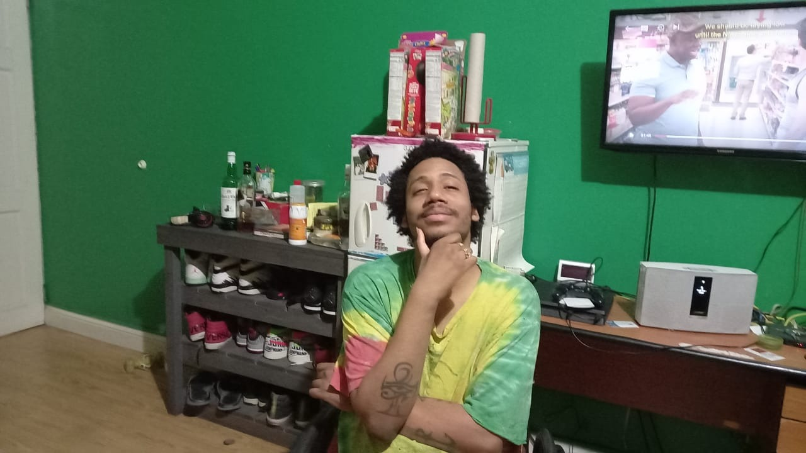

Chad Richard French
The man of all ego and none.

The smile hides many mysteries:
Here is the life of Chad as I know.
- 1990: April 3rd. Chard Richard French was Born
- 2000: Passed for Presentation college San Fernando
- 2001: Moves to Gulf View.
- 2003: Gulf City freeness reigned as the stainless steel grill of the young French, wooed young and old women alike into giving him free shit.
- 2004: Introduced his good friend Justin Homer to the beautiful Stephanie Torry
- 2004: Was in complete shock when Justin Homer(aka Bigs) was actually big pimpin. Stephanie Torry became "Bigs" girlfriend
- 2005: Made his debut as Mr.Steal Your Girl. In short, Stephanie and "Bigs" were no longer together.
- 2006: Chad Richard French became and infuluential figure this year. Influencing his friends into smoking weed among other things.
- 2011: Tragery, on Feburary 13th, Chad was in a devistating accident, barely escaping withi his life, but temporarily losing the full abilites of his body.
- 2014: Refusing to give up on the adventure of life, Chad took a spectacular dive into a swimming pool. T'was quite remarkable.
- 2021: Chad decided to take his recovery more seriously. Always acting everyday, doing the most important tasks first. Quite often that task being self physical rehab.
- 2022: After one year of hard training daily, Chad could now stand on his own with the assistance of paralle bars
- 2023: Chad now walked again, unassisted. In his eyes and the eyes of many, the world of oppurunity was now his for the taking.